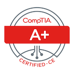
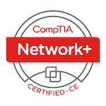
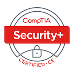
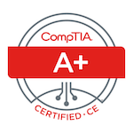
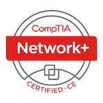
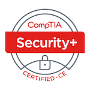

Justin Johnson
Cell: 850-691-9708
Email: justin@initcyber.com
LinkedIn: Click Here
Accomplished, detail-oriented Cybersecurity / Information Technology Professional highly regarded for proficiency in determining system/security requirements and resolving issues quickly. Skilled in providing effective results in fast-paced, deadline-driven environments. Well-versed in both today’s technology and software to not only provide service and implement, but also secure and protect these devices and systems. Known for outstanding presentation and communication skills, understanding business requirements to cross-collaborate and increase profits. Out-of-the-box, analytical thinker who pushes creative limits to solve complex technical issues, optimizing project outcomes.
- Certifications
-
AWS
Solutions Architect Associate: May, 2020 - (Verification Code: FNX6Y2MK3BBE15WR
ISC(2)
Certified Information Systems Security Professional: July, 2019 (ISC(2) ID Number: 714277
CompTIA
A+: September, 2018 - (Verification Code: 2WQVW5MPPHREQ6G8)
Network+: August, 2018 - (Verification Code: Y3R9JMJHGCQE18G5)
Security+: May, 2018 - (Verification Code: L81GJERNHLE1129P)
- Education
-
Colorado State University - Global Campus
Degree Type: Bachelors of Science
Major: Information Technology
Specialty: Cybersecurity
Graduation Date: May, 2018 GPA: 4.0
Relevant Coursework: Information Systems and Security, Network Enterprise Solutions, Intermediate Networking, Basic Programming, Database Management, Digital Forensics and Investigations, Principles of Cyber Security, Ethical Hacking and Penetration Testing, Information Technology Project Management.
Awards: Golden Key International Honour Society, Awards of Achievement in Information Systems Management and Network Security and AnalysisFlorida State University
Degree Type: Bachelors of Science
Major:Criminology
Minor:Psychology
Graduation Date:January, 2011 GPA: 3.6
Gulf Coast State College
Degree Type: Associate of Art
Graduation Date:January, 2009 GPA:3.3
- Skills
-
Applications
JIRA, Microsoft Office 365 (Word, Excel, PowerPoint, Outlook), and more
Databases
Microsoft SQL Server, MySQL
Hardware
Various Hardware including Desktops and Servers, Networking Equip.
Mobile
Android/iOS
SIEM
Splunk, Nessus (Tenable), ACAS
Cloud
AWS
Server Administration
Windows Server 2012 R2 (Active Directory, Group Policy, Remote Desktop Services, Windows Server Update Services) and Server 2016/2019.
Virtualization
VMware Virtualization (Both Type 1 – ESXI and Type 2), Oracle VirtualBox, Microsoft Hyper-V, Proxmox(KVM)
- Experience
-
Georgia Tech Research Institute
Information System Security Officer
Atlanta, GA : 2018 - Present- Actively work with Risk Management Framework (RMF), NIST SP 800, Joint Special Access Programs Implementation Guide (JSIG) and National Industrial Security Program Operating Manual (NISPOM) to provide Bodies of Evidence (BOE) to government departments for security of their systems.
- Identified System Vulnerabilities as well as assisted in approval of software’s to be added to system through thorough research of known vulnerabilities and issues, as well as implementing mitigation strategies.
- Actively monitors/updates/utilizes SIEM tools including Nessus and Splunk on Information Systems to ensure critical updates are implemented, and auditing of systems are performed (weekly).
- Provides training to new users to ensure compliance with Information Assurance Standard Operating Procedures.
Mount Vernon Towers
IT Technician
Atlanta, GA : 2018- Restructured/redesigned network for the company to not only streamline data and efficiency, but in turn save money by combining external services into one platform.
- Established various testing and hardening practices to ensure security of network and physical components.
- Assist residents and employees with day-to-day IT issues, such as internet connectivity, data-migration, password resets, adding and removing users, mobile devices, and education on new technologies.
- Set-up and install DirectTV, as well as managing the DirectTV Server.
- Managed wireless and wired networking (including various brands of routers/switches and Ubiquiti Access Points), VPN, IP/POT Telephones.
Bay County Sheriff's Office
Corporal
Panama City, FL : 2013 - 2018- Supervise 6 deputies in the West District, organizing daily zone schedules, resolving employee grievances, and training and counseling deputies.
- Awarded Deputy of the Year for 2014 for highest arrest/report clearances.
- Awarded Medal of Commendation in 2014 for going above and beyond the call of service in solving a burglary case.
BookIt.com
Loss Prevention - Fraud
Panama City Beach, FL : 2011 - 2013- Maintained constant contact with IT Department to provide recommendations for updates to JIRA reporting system.
- Constructed spreadsheets and databases to streamline Loss Prevention Department production and reporting.
- Researched and identified fraudulent reservations, and worked with hotel properties, banks, and other financial institutions in recovering funds from fraudulent reservations.
CompUSA
Loss Prevention/IT Technician
Nashville, TN : 2006 - 2007- Hardware/Software Repairs
- Windows Vista/Office 2007 Specialist - Assisted with launch of product - Presentations of products
- Ensured high-priced computers and equipment were accounted for within the store.
- Researched and investigated previous internal and external losses and thefts with strict attention to detail.
- Ensured high-ticket items were not at risk by using surveillance cameras and auditing security equipment.
Additional Experience
- Laguna Beach Supply Co., Panama City, FL: 2002 – 2005, 2007 – 2011, Cashier/Stock/Events
- Osborne Apple Market, Nashville, TN: 2005 – 2006, Stock/Cashier
- References
- Available on request
 




